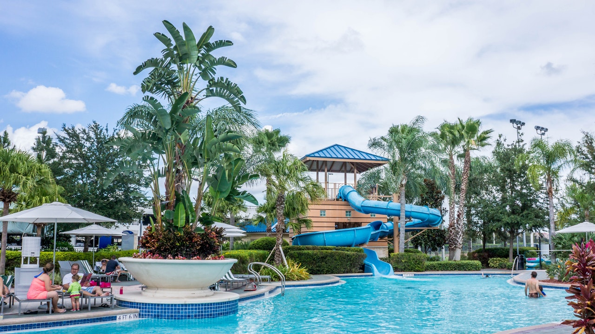
Park Hyatt Sydney
With panoramic views of Sydney Opera House, Park Hyatt Sydney is a five-star hotel that is difficult to fault. From the service that seeks to cater to each guest individually, the fine dining experience in The Dining Room, rooftop pool and excellent spa, this hotel is a truly luxurious experience.

Qualia
No matter how many photos they post on Instagram, no image will ever do this 60-room resort on the edge of The Great Barrier Reef justice. World-class service, enormous pavilions, mind-bending views, poolside luxury, and a private beach combine to make this Australia’s premier beachside resort retreat.
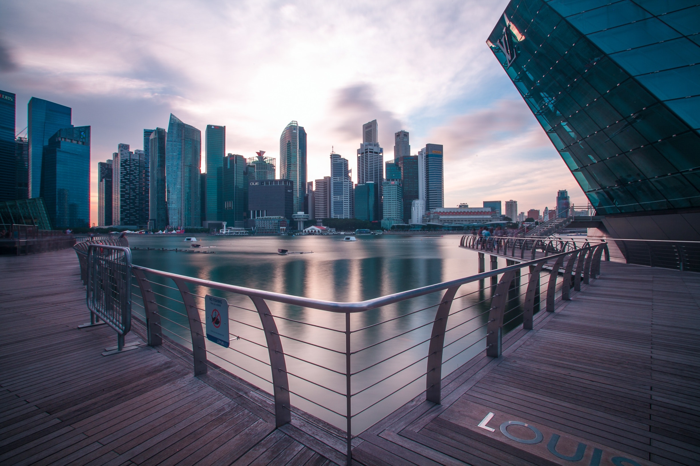
Elements of Byron
Australia’s newest beach resort combines impeccable environmental credentials with a lavish dose of bling. The result is enthralling. Guests stay in luxury eco-cabins with access to a surf beach and wetlands. Facilities include a swanky restaurant, lagoon pool and day spa.
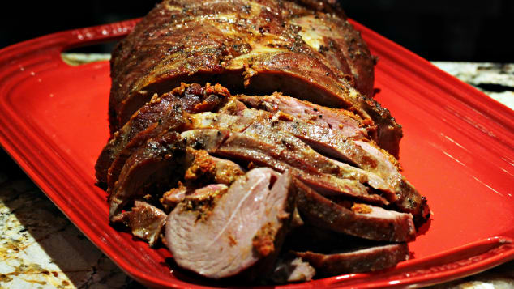
Lamb leg roast
Many a wandering son or daughter returns home for Sunday lunch when mum's cooking a lamb roast. It's the garlic, rosemary and olive oil that make this piece of meat delicious and tender. It's then served with enough baked potatoes to end any family feud. Though its origins may be beyond Australian borders, Aussies will proudly say only they know how to put on a good one.
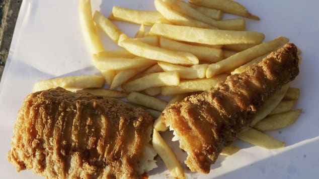
Fish 'n' chips by the beach
it's an Australian version of fish 'n' chips. The sun is out, the water's crisp and you're hungry. What to go for? Australia has some of the best seafood in the world and that means you're almost guaranteed fresh fish, served with salt and lemon, wrapped in yesterday's newspaper or white wrapping.
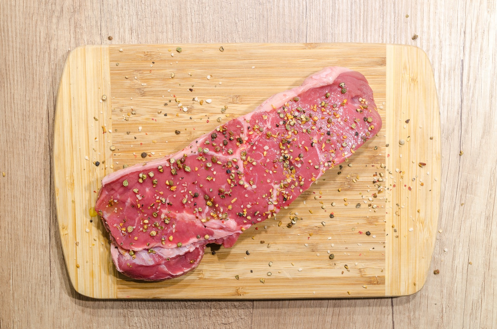
John Dory fillets
Found commonly in Australian waters including Sydney Harbour, John Dory is a popular fish variety in local cuisine. Battered and fried and served with chips, or pan-fried with herbed oil on a bed of mashed potato with salad, this is a versatile, meaty fish and popular Australian food.
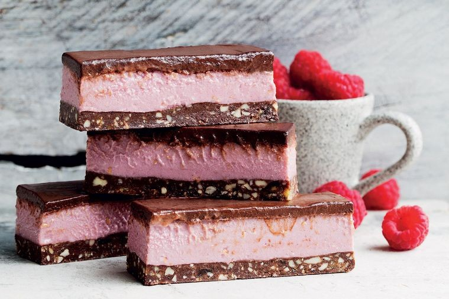
Iced VoVo
When former Prime Minister Kevin Rudd mentioned Iced VoVo in his 2007 election speech, he single-handedly cemented the biscuit's place in Australian folklore. The wheat-flour biscuit with a strip of pink fondant on either side of raspberry jam and sprinkled with coconut is a sweet, soft and crunchy mouthful. It's made by biscuit company Arnott's, an Australian food institution itself and now a subsidiary of U.S.-based Campbell Soup Company.
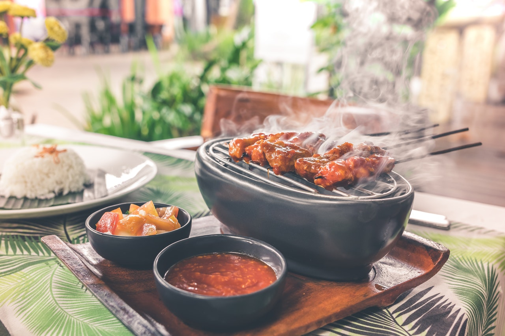
Barbecued snags
Nothing is more Australian than getting friends or family together for a barbecue. And at the heart of any good barbie is a selection of good Australian snags -- from the traditional pork or beef, to those flavored with herbs and spices from around the world. There's something homey about a snag in a roll or a slice of bread covered in your favorite sauce, perhaps with some fried onion on top and some spuds on the side. A sausage sizzle put on outside the local hardware store on Sundays makes a bit of DIY that much more appealing.
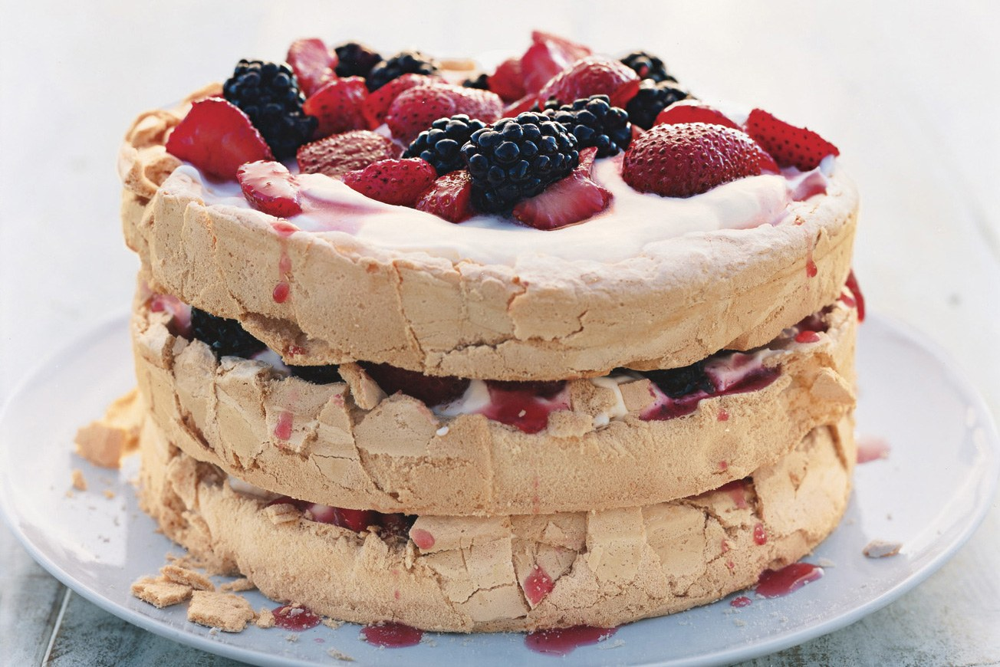
Pavlova
Australia and New Zealand have shared rivalries for years, and the pavlova's origin is another to add to the list. Both countries claim to have invented the dish in honor of Russian ballerina Anna Pavlova when she visited Australasia in the 1920s. No evidence conclusively substantiates either claim (unlike Crowded House, Phar Lap and Russell Crowe). But even if it was finally proven once and for all to hail from New Zealand, Aussies would surely still label it Australian food. Pavlova is a popular meringue-based dessert that has a crisp crust and a soft, light inside. It's often decorated with whipped cream and fresh fruit and served at celebratory meals.
Cheese and bacon roll
Not one for the health enthusiasts, but a favorite among those suffering from the effects of the night before. The cheese and bacon roll is, quite simply, a bread rolled topped in bacon chunks and cheese. A popular Australian food lunchbox filler.
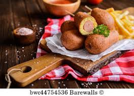
Dagwood dog
They say the show must go on, but it just can't without a dagwood dog. Formany, when you say dagwood dog you think of the Sydney Royal Easter Show, because this frankfurter on a stick that is battered and deep-fried is found at most carnivals. With tomato sauce on top, of course.
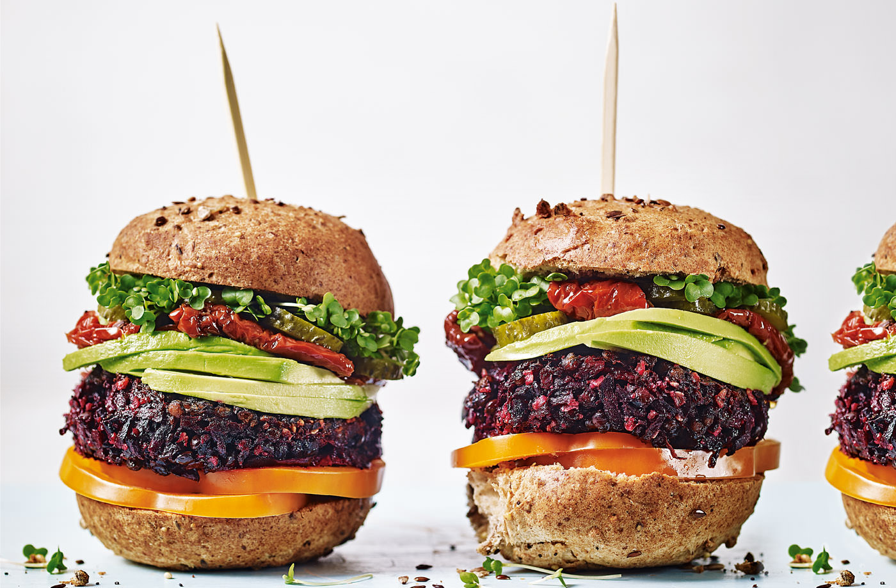
Hamburger with beetroot
You can eat burgers all over the world, but nothing is more Australian than slinging a piece of beetroot on top a pattie made with Aussie beef. That soft bun, all-beef pattie and cheese is simply not properly done without the finishing touch of beetroot. It's so good that Ronald McDonald tried to jump on the bandwagon with a McOz many years back. But it's natural home is the local take-away joint or local pub.
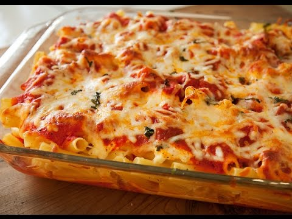